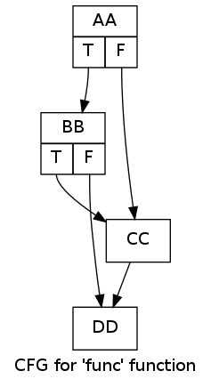
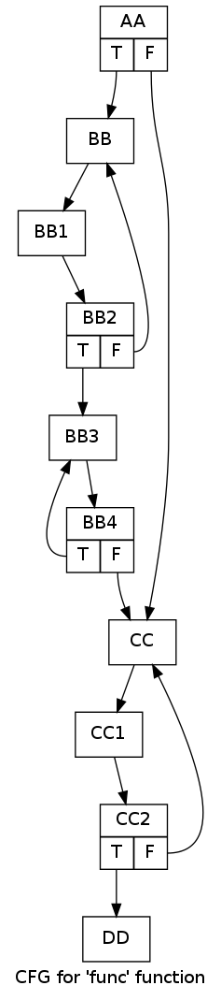

A common question about LLVM that comes up on Stack Overflow is how to build the control-flow graph (CFG) of a function and then topologically sort it, or some variation of this. To save myself answering time in the future, I figured I'll just throw a quick post together that shows off a number of capabilities LLVM provides in this domain.
First of all, people asking this question often miss the fact that basic blocks (BBs) are already organized in a CFG, and there's no need to build a new graph in order to run interesting analyses.
Each BB has a list of successors - BBs to which control-flow may transfer from this BB. It can be easily obtained by looking at the terminator instruction of the BB (by definition, a BB has a single terminator):
// BB is a BasicBlock*
// ...
const TerminatorInst *TInst = BB->getTerminator();
for (unsigned I = 0, NSucc = TInst->getNumSuccessors(); I < NSucc; ++I) {
BasicBlock *Succ = TInst->getSuccessor(I);
// Do stuff with Succ
}
This interlinking of BBs constitutes a graph we can traverse in any way we see fit. For example, here is an implementation of topological sorting:
class TopoSorter {
public:
void runToposort(const Function &F) {
outs() << "Topological sort of " << F.getName() << ":\n";
// Initialize the color map by marking all the vertices white.
for (Function::const_iterator I = F.begin(), IE = F.end(); I != IE; ++I) {
ColorMap[I] = TopoSorter::WHITE;
}
// The BB graph has a single entry vertex from which the other BBs should
// be discoverable - the function entry block.
bool success = recursiveDFSToposort(&F.getEntryBlock());
if (success) {
// Now we have all the BBs inside SortedBBs in reverse topological order.
for (BBVector::const_reverse_iterator RI = SortedBBs.rbegin(),
RE = SortedBBs.rend();
RI != RE; ++RI) {
outs() << " " << (*RI)->getName() << "\n";
}
} else {
outs() << " Sorting failed\n";
}
}
private:
enum Color {WHITE, GREY, BLACK};
// Color marks per vertex (BB).
typedef DenseMap<const BasicBlock *, Color> BBColorMap;
// Collects vertices (BBs) in "finish" order. The first finished vertex is
// first, and so on.
typedef SmallVector<const BasicBlock *, 32> BBVector;
BBColorMap ColorMap;
BBVector SortedBBs;
// Helper function to recursively run topological sort from a given BB.
// Returns true if the sort succeeded and false otherwise; topological sort
// may fail if, for example, the graph is not a DAG (detected a cycle).
bool recursiveDFSToposort(const BasicBlock *BB) {
ColorMap[BB] = TopoSorter::GREY;
// For demonstration, using the lowest-level APIs here. A BB's successors
// are determined by looking at its terminator instruction.
const TerminatorInst *TInst = BB->getTerminator();
for (unsigned I = 0, NSucc = TInst->getNumSuccessors(); I < NSucc; ++I) {
BasicBlock *Succ = TInst->getSuccessor(I);
Color SuccColor = ColorMap[Succ];
if (SuccColor == TopoSorter::WHITE) {
if (!recursiveDFSToposort(Succ))
return false;
} else if (SuccColor == TopoSorter::GREY) {
// This detects a cycle because grey vertices are all ancestors of the
// currently explored vertex (in other words, they're "on the stack").
outs() << " Detected cycle: edge from " << BB->getName() <<
" to " << Succ->getName() << "\n";
return false;
}
}
// This BB is finished (fully explored), so we can add it to the vector.
ColorMap[BB] = TopoSorter::BLACK;
SortedBBs.push_back(BB);
return true;
}
};
[The full code that also contains the other snippets in this post is available here]
It uses the simple recursive DFS algorithm outlined in "Introduction to Algorithms" by Cormen et al. During the recursive search, vertices are marked "grey" when first encountered and "black" when they're finished. A finished vertex is one whose outgoing edges have all been explored. Topological sorting is the list of all vertices sorted by finish time, from last to first (this is also called "reverse post-order"). In our specific case, a BB is a vertex and links to its successors are edges.
For this CFG:
We'll get:
Topological sort of func:
AA
BB
CC
DD
There's an important caveat, however. Topological order is only defined for directed graphs without cycles (DAGs). While the basic block graph is directed, it's not necessarily cycle-free. In fact, any loop in the code translates to a cycle in the BB graph. The code above detects this and reports an error, refusing to provide a sort when a cycle is found.
For example, consider this CFG with some loops in it:
The code will now complain:
Topological sort of func:
Detected cycle: edge from BB4 to BB3
Sorting failed
Now that we know how to do it the hard way, let's see some of the useful tools LLVM has in its coffers. The header llvm/ADT/PostOrderIterator.h offers iterators for going over BBs inside a function in post-order traversal. Here's the complete usage snippet:
outs() << "Basic blocks of " << F.getName() << " in post-order:\n";
for (po_iterator<BasicBlock *> I = po_begin(&F.getEntryBlock()),
IE = po_end(&F.getEntryBlock());
I != IE; ++I) {
outs() << " " << (*I)->getName() << "\n";
}
Recall that topological sort is reverse post-order, though. So if it's really that order you need, consider the ReversePostOrderTraversal class from the same header. Note that neither detects cycles, however. In the presence of cycles these iterators will produce some traversal, but it won't be the topological order because it's simply undefined in such cases. If you want a tool to detect cycles, there's FindFunctionBackedges in llvm/Analysis/CFG.h. It essentially runs the same DFS as I showed above, though using an iterative algorithm with an explicit stack instead of the recursion.
One interesting thing to note about po_iterator and its kin is that they can be used for any kind of graph, not just the graph of basic blocks. They can be used for graphs of functions in inter-procedural analysis, for nodes in an expression graph, and so on. This magic is achieved by means of the GraphTraits mechanism (llvm/ADT/GraphTraits.h), which lets us decouple graph representations from the actual algorithms that work on all kinds of graphs. The template specialization that makes this work for basic blocks can be found in llvm/Support/CFG.h - in this header you can also find iterators for going over the successors (and predecessors) of BBs without manually querying the terminator instruction.
Back to topological sort though. Since many interesting functions will have loops and thus cycles, what do we do about them? The answer is strongly-connected components (SCCs). If we identify the SCCs of the BB graph, we can topologically sort these SCCs and still do interesting analyses. A loop would usually collapse into a single SCC, for example. So how do we go about implementing this?
Luckily, LLVM already has a tool to help us. The header llvm/ADT/SCCIterator.h defines scc_iterator which iterates over the SCCs in a graph in post-order. This lets us topologically sort the SCCs similarly to the way we'd sort BBs in a cycle-less graph. In fact, in a cycle-less graph each BB is a SCC on its own, so the SCC approach is a generalization. Using scc_iterator is easy:
// Use LLVM's Strongly Connected Components (SCCs) iterator to produce
// a reverse topological sort of SCCs.
outs() << "SCCs for " << F.getName() << " in post-order:\n";
for (scc_iterator<Function *> I = scc_begin(&F),
IE = scc_end(&F);
I != IE; ++I) {
// Obtain the vector of BBs in this SCC and print it out.
const std::vector<BasicBlock *> &SCCBBs = *I;
outs() << " SCC: ";
for (std::vector<BasicBlock *>::const_iterator BBI = SCCBBs.begin(),
BBIE = SCCBBs.end();
BBI != BBIE; ++BBI) {
outs() << (*BBI)->getName() << " ";
}
outs() << "\n";
}
For the loopy CFG shown above, this code will print:
SCCs for func in post-order:
SCC: DD
SCC: CC2 CC1 CC
SCC: BB4 BB3
SCC: BB2 BB1 BB
SCC: AA
[Note that this is post-order, not reverse post-order; hence the topological sort is showing in the list from the bottom up.]
I hope this was a useful peek into the CFG analysis capabilities of LLVM. I've given a lot of pointers into the code and these can serve as starting points for some serious code-reading. It's pretty cool to see how many different tools LLVM has for this purpose, and especially nice to see that most of them apply to any kind of graph, thanks to the GraphTraits mechanism.